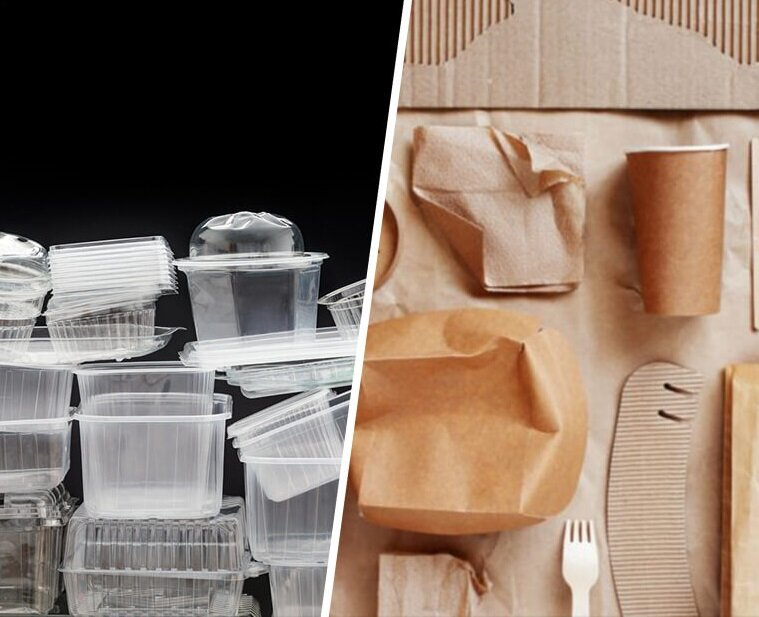
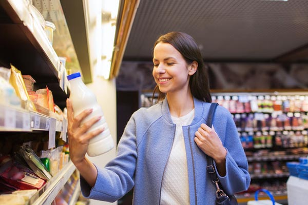
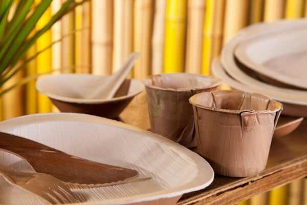
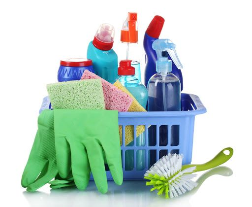
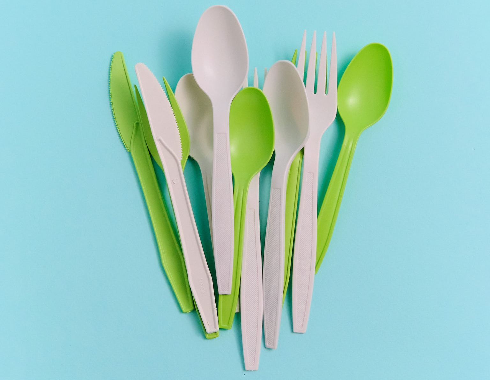
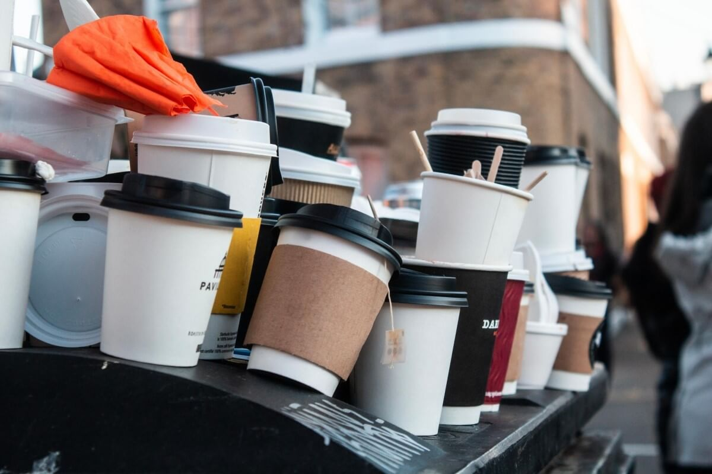
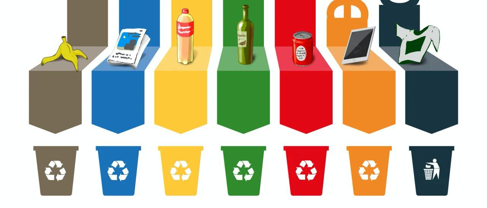
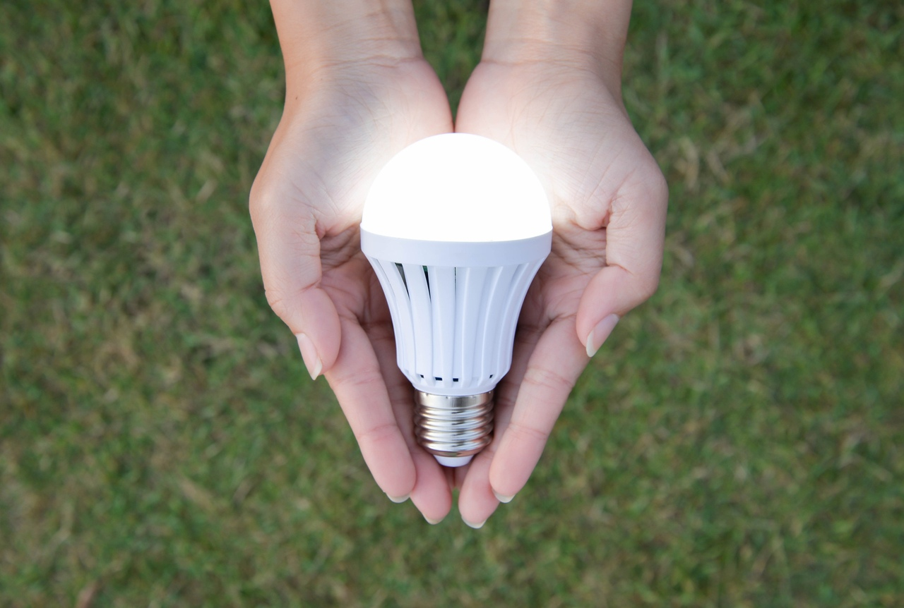
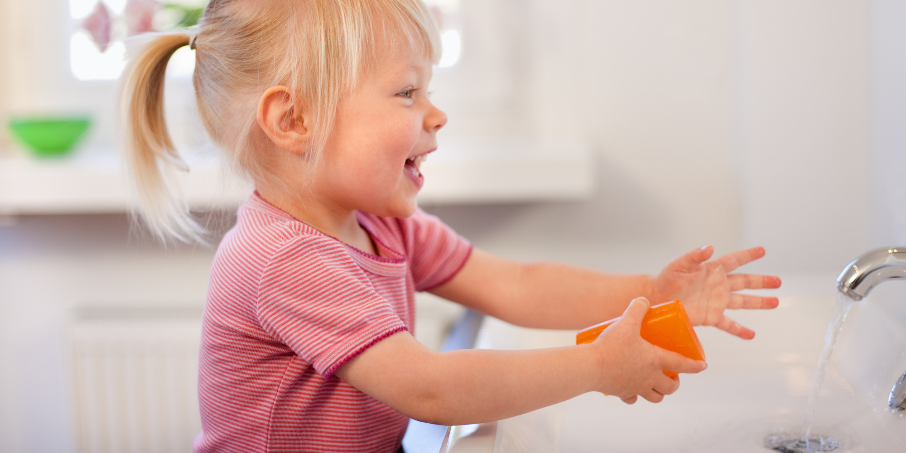

Что вреднее пластик или бумага?
15 ноября 2022

Как научиться читать экомаркировку на упаковках
17 ноября 2022

Как сахарный тростник становится эко-посудой
22 ноября 2022

Как распознать экологичную бытовую химию
25 ноября 2022

Альтернатива пластиковым приборам
27 ноября 2022

Что делать с бумажным стаканчиком после использования
27 ноября 2022

Как сортировать мусор?
27 ноября 2022

Полезные обеды с собой на работу
27 ноября 2022

Как правильно и зачем утилизировать светодиодные лампы?
27 ноября 2022

Как приучить ребенка мыть руки?
27 ноября 2022